library(tidyverse)
library(reshape2)
cordata <- na.omit (data[ ,c("Ikä", "Sinnikkyys", "Ekstroversio", "Avoimuus",
"Neuroottisuus", "Tunnollisuus") ] )
cormat <-round(cor(cordata), 2)
cormat <- melt(cormat)
ggplot(data=cormat, aes(x=Var1, y=Var2, fill=value))+
geom_tile() +
geom_text( aes(Var2, Var1, label=value), colour="black" )+
theme_minimal() +
theme( axis.text.x = element_text(angle=45, hjust =1),
axis.title = element_blank() ) +
scale_fill_gradient2( low="blue", high="red", mid="white",
midpoint= 0, limit = c(-1,1), space="Lab",
name = "Pearsonin\nkorrelaatio")+
theme(text = element_text(size=16))8 Jamovi, Rj-editor ja Rstudio
8.1 Scatterplot, HeatMap ja Rj-editor
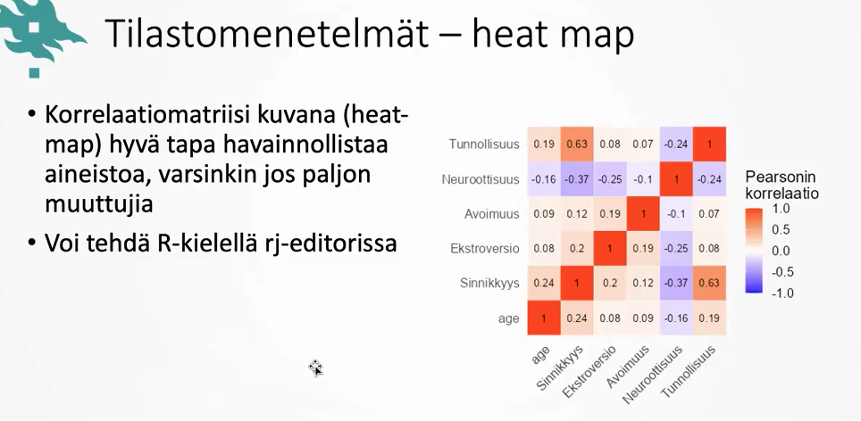
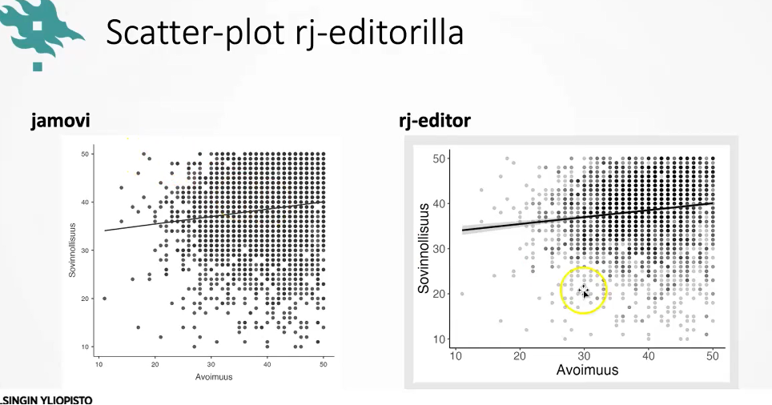
jamovissa haasteena, että piirtää kaikki pisteet joissa useampia havaintoja vain suoraan mustaksi
rj-editorilla voidaan määritellä transparenssia eli läpinäkyvyyttä sen mukaan kuinka paljon havaintoja tietty arvo on saanut
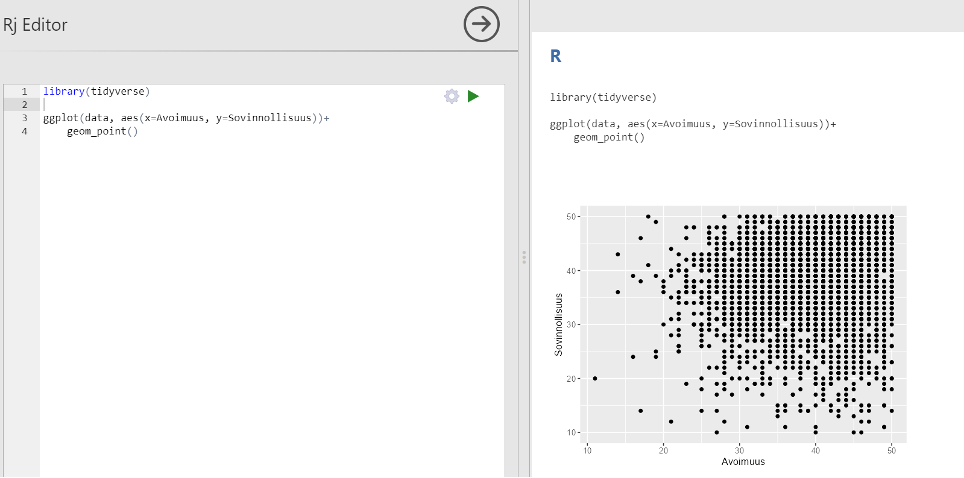
komennot:
library(tidyverse) -> hakee kirjaston tidyverse, joka sisältää ggplotin
ggplot(data, aes(x=Avoimuus, y=Sovinnollisuus)) -> luo kuvan ja x ja y akselit
+ -> pystyy lisäämään elementtejä kuvaan
geom_point() -> lisää pisteet kuvaan
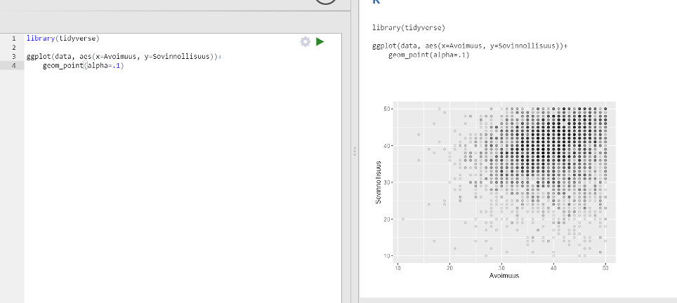
- geom_point(alpha=.1) -> alpha määrittelee läpinäkyvyyden tason. 1 ei yhtään läpinäkyvä ja mitä lähempänä 0 sitä läpinäkyvämpi
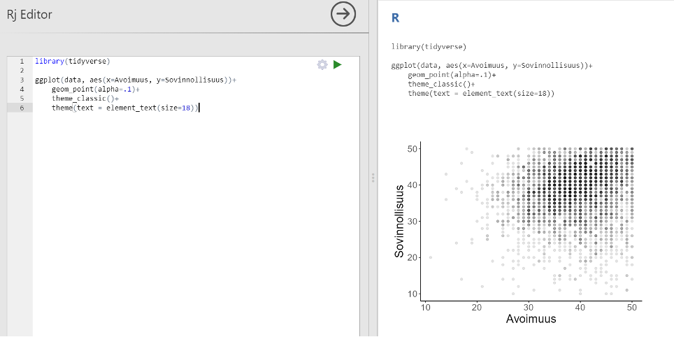
theme_classic -> muuttaa teeman
theme(text = element_text(size=18)) -> muuttaa tekstin fonttikoon
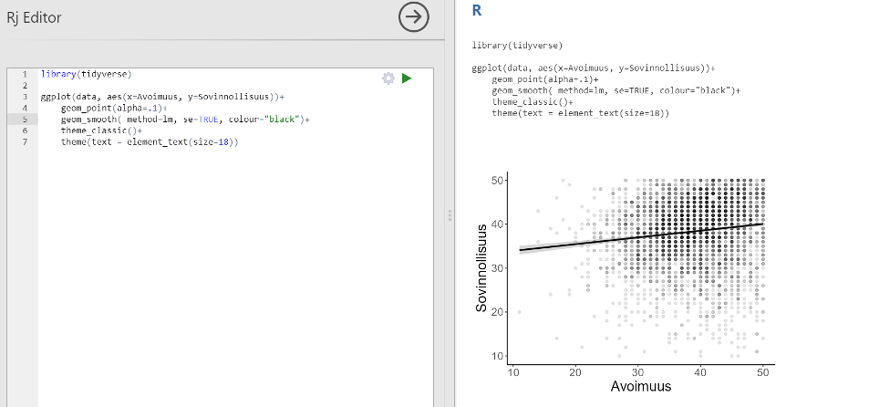
geom_smooth( method=lm, se=TRUE, colour=“black”)
- piirtää regressiosuoran
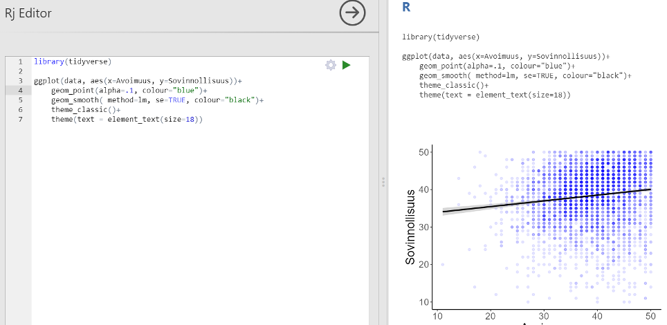
- geom_point(alpha=.1, colour=“blue”) -> lisättiin värikomento ja pisteet muutettiin sinisiksi
8.2 Heatmap rj-editorilla
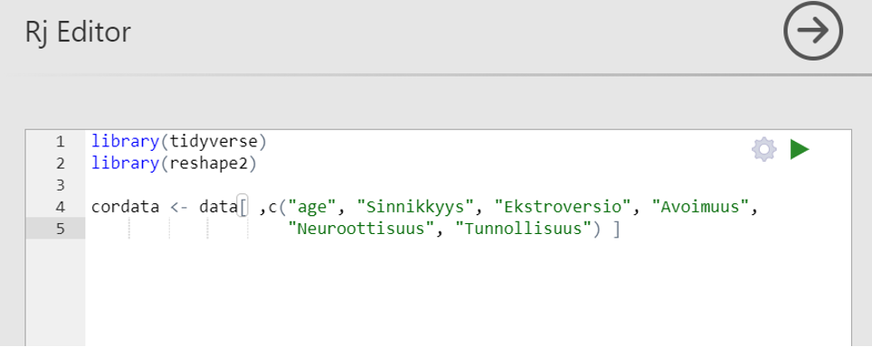
cordata <- data[ ,c(“age”, “Sinnikkyys”, “Ekstroversio”, “Avoimuus”, “Neuroottisuus”, “Tunnollisuus”) ]
komennolla saadaan valittua haluttu tietty osa datasta
reshape2 librarya tarvitaan heatmapin tekemiseen
str(cordata) -> tällä voi tsekata minkätyyppisiä muuttujat ovat, minulla tuli koko ajan virhe ”x must be numeric”, joka johtui siitä, että ikä oli jäänyt vahingossa kategoriseksi muuttujaksi
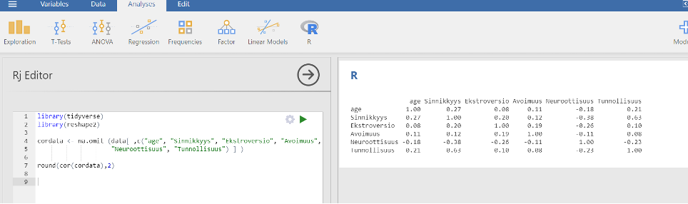
round(cor(cordata),2)
- round() -> pyöristää, kun 2 niin kahteen desimaaliin, kun 4 niin 4 desimaaliin yms
cor(cordata) -> cor() tekee korrealaatiomatriisin
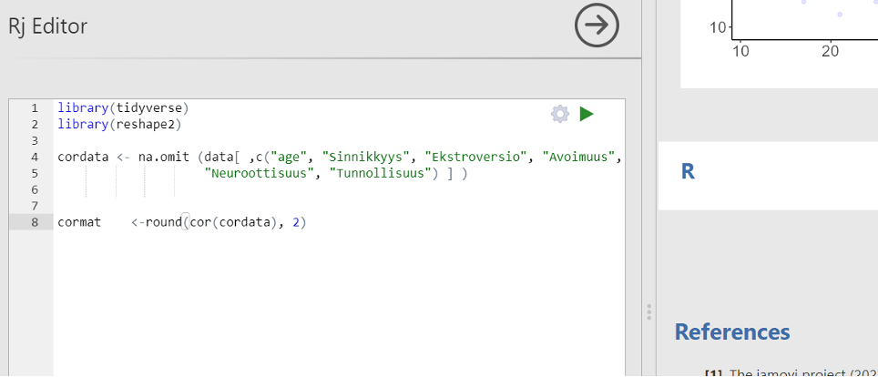
<- komennolla tallennetaan tulokset johonkin muuttujaan
cormat <- round(cor(cordata), 2), tallentuu cormat muuttujaan
silloin kun tallennetaan johonkin ne eivät myöskään tulostu näkyviksi
ne saadaan tulostettua näkyville kirjoittamalla muuttuja, johon ne tallennettiin eli tässä tapauksessa cormat
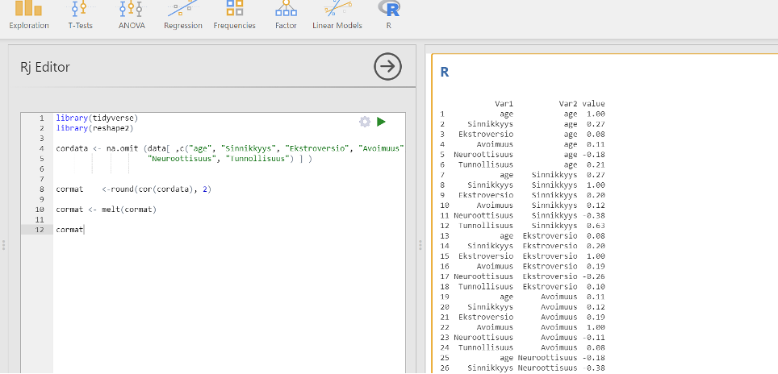
melt(cormat)
- muuttaa numerot datamatriisiksi, jotka pystytään sitten muuttamaan heatmapiksi
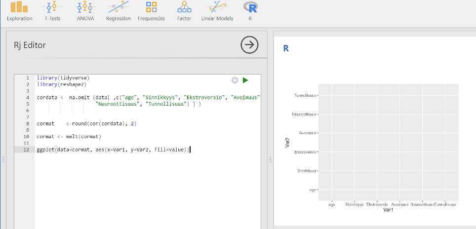
käytetään ggplotia kuvan luomiseen
ggplot(data=cormat, aes(x=Var1, y=Var2, fill=value))
- Var1 ja Var2 ovat äskeisen melt funktion luomat muuttujat
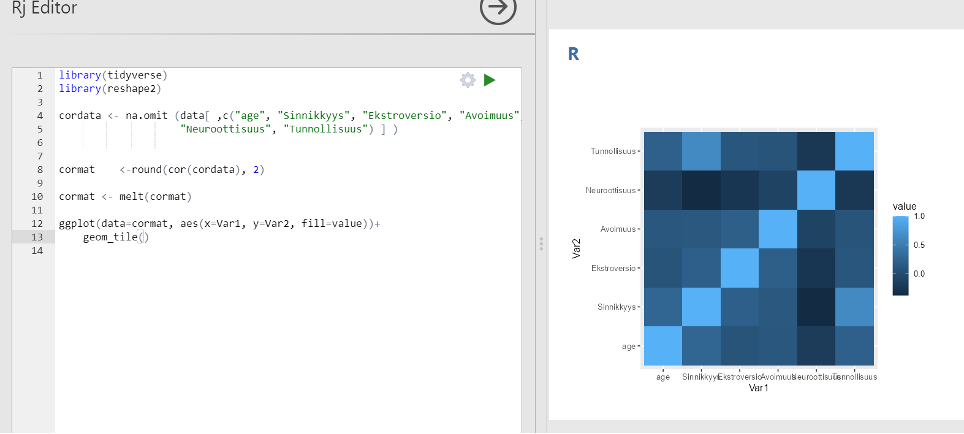
- geom_tile() -> lisää värit korrelaation mukaisesti
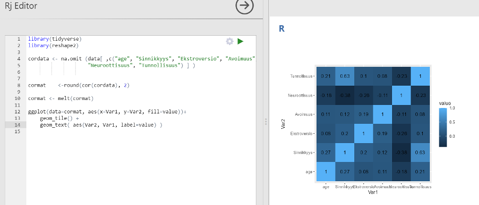
geom_text( aes(Var2, Var1, label=value) )
- lisää arvot laatikoihin
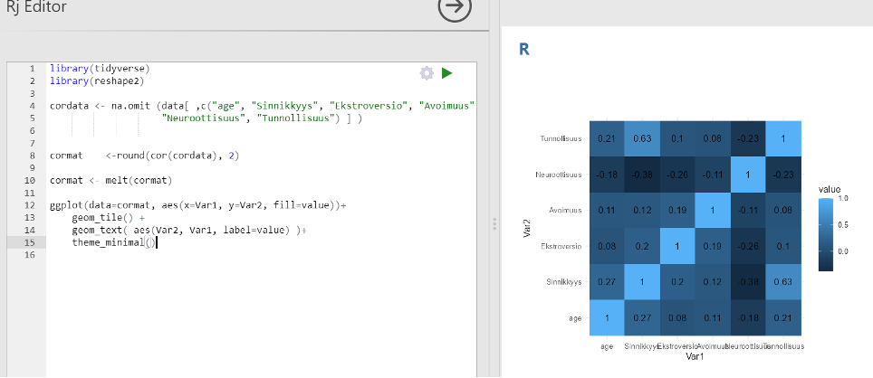
theme_minimal()
- määrittää teeman
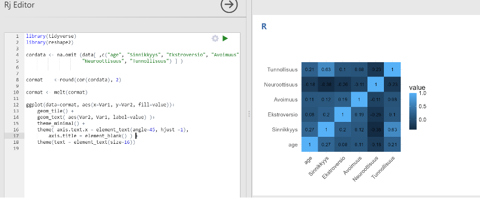
theme(text = element_text(size=16))
- määrittää tekstin koon
theme( axis.text.x = element_text(angle=45, hjust =1), axis.title = element_blank() )
theme( axis.text.x = element_text(angle=45, hjust =1))
- kääntää tekstien kulman 45 asteeseen
axis.title = element_blank()
- poistaa otsikot Var1 ja Var2
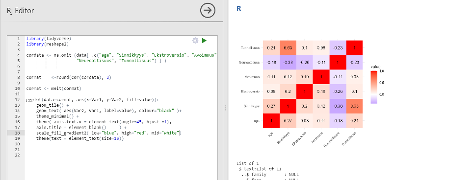
scale_fill_gradient2( low=“blue”, high=“red”, mid=“white”)
- määrittää heatmapin värit
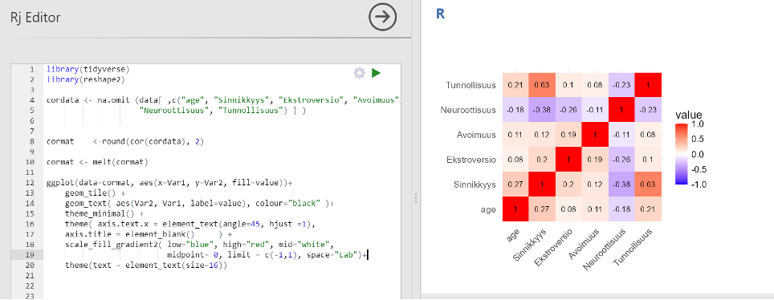
scale_fill_gradient2( low=“blue”, high=“red”, mid=“white”,
midpoint= 0, limit = c(-1,1), space=“Lab”)+
midpoint= 0, limit = c(-1,1), space=“Lab”
- lisäyksellä varmistetaan, että värien skaala menee -1:stä 1:n, vaikka arvoissa ei olisi yhtään ääriarvoa.
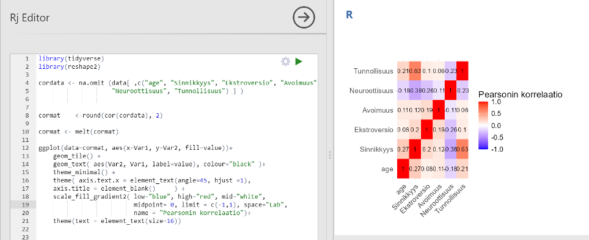
name = “Pearsonin korrelaatio”
- lisäys muutti skaalan nimeksi Pearsonin korrelaatio
scale_fill_gradient2( low=“blue”, high=“red”, mid=“white”,
midpoint= 0, limit = c(-1,1), space=“Lab”,
name = “Pearsonin korrelaatio”)
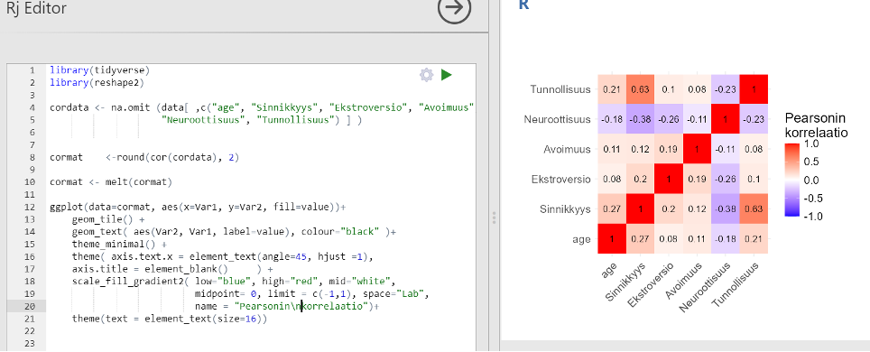
\n tekee rivinvaihdon
name = “Pearsonin\nkorrelaatio”
- saatiin Pearsonin ja korrelaatio eri riveille
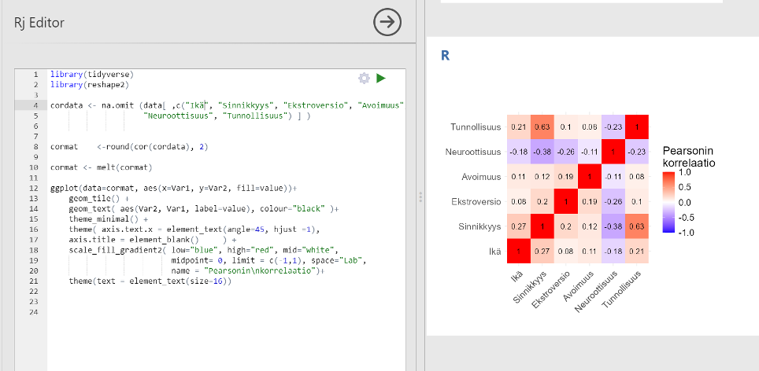
muutettiin muuttujan ”age” nimi suomenkieliseksi eli ”Ikä”.
- käytiin ensin vaihtamassa data välilehdeltä muuttujan nimi oikeasti ja sitten se piti vielä korjata r-editoriin oikeaksi nimeksi takaisin
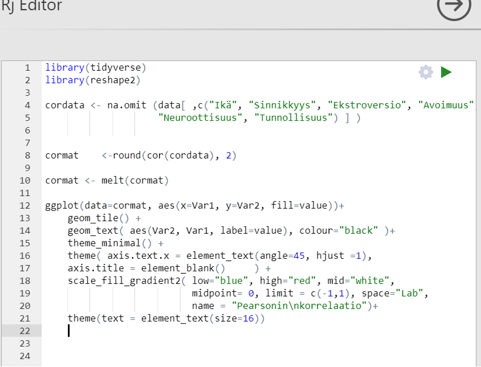
Vielä kopioitavana teksinä koko heatmapin koodi:
8.3 Long ja wide format (pitkä ja leveä data)
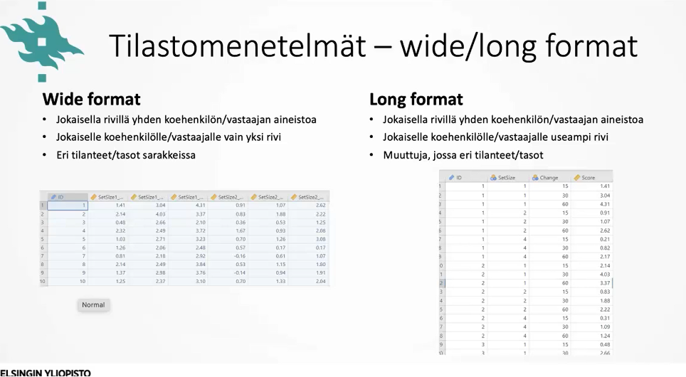
Wide
joka rivillä yhden koehenkilön aineistoa
joka koehenkilöllä vain yksi rivi
eri tilanteet sarakkeissa
Long
joka rivillä vain yhden koehenkilön aineistoa, mutta joka koehenkilölle on varattuna useampi rivi
muuttuja, jossa eri tilanteet / tasot
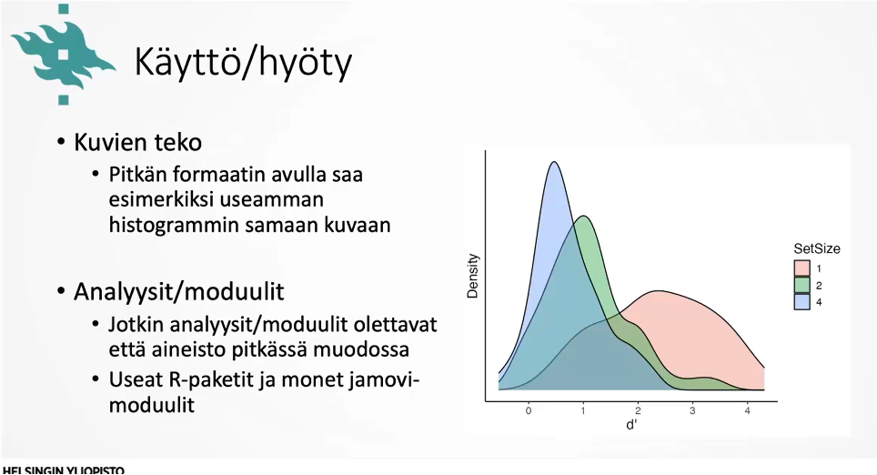
jos kääntää aineiston pitkään muotoon niin helppo tehdä kuvia
- esim. saa samaan kuvaan monta histogrammia
8.3.1 Jamovissa
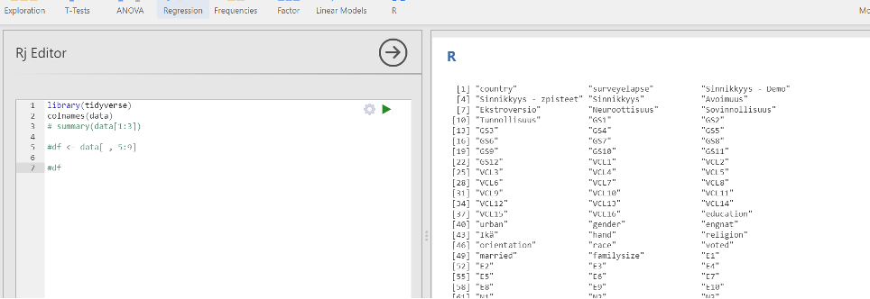
colnames(data) -> komennolla näkee, mitkä ovat datan kolumnien eli sarakkeiden nimet
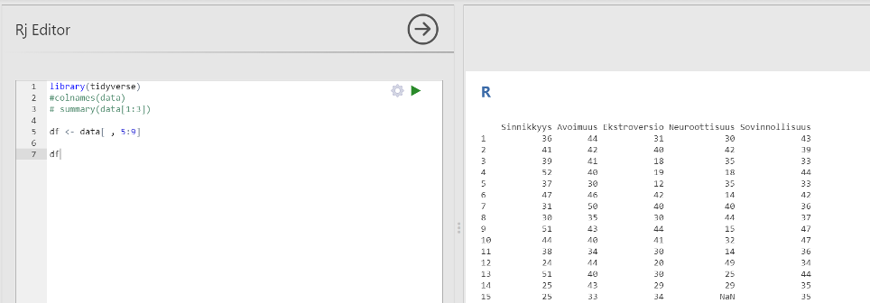
<- data[ , 5:9]
komennolla tallennettiin data sarakkeista numero 5:stä numero 9:n muuttujaan df
sen jälkeen df muuttujalla saa tulostettua kyseiset sarakkeet
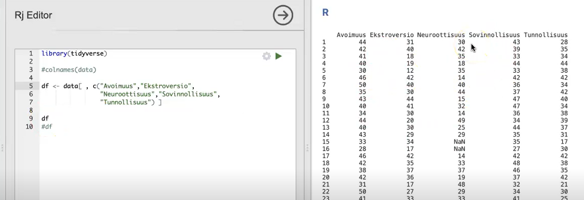
kolumnit voi tallentaa df muuttujaan myös seuraavalla komennolla
<- data[ , c(”Avoimuus”, ”Ekstroversio”)] ¨
tällöin täytyy kirjoittaa sarakkeiden nimet täsmälleen oikein
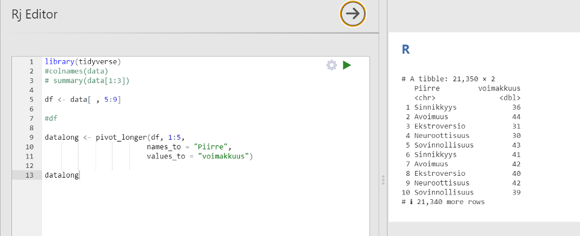
pivot_longer(df, 1:5, names_to = ”Piirre”, values_to = ”Voimakkuus”)
muuttaa datan pitkään muotoon. names_to ja values:to muuttavat sarakkeiden otsikoita
<- jälleen kerran nuolikomennolla talletetaan tiettyyn muuttujaan (datalong)
Jamovissa ei pysty suoraan viemään r-editorista datapuolelle graafiseen käyttöliittymään, joten data pitkässä muodossa täytyy tallettaa
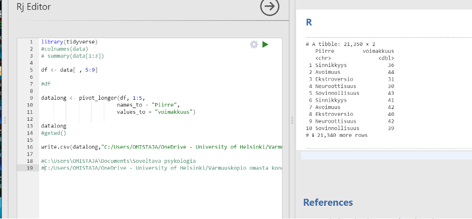
getwd() komennolla näkee working directoryn?? en tiedä mitä hyötyä siitä oli, koska kuitenkin oli eri kuin mihin kaikki tiedostovat lähtökohtaisesti kannattaa tallentaa
write.csv() komennolla saa talletettua tiedoston valitsemaansa kansioin
C:/Users/OMISTAJA/OneDrive - University of Helsinki/Varmuuskopio omasta koneesta/Tiedostot/Soveltava Psykologia/Tutkimusmenetelmät_1/Data/Grit_&_ Face/datalong.csv”
käytin kyseistä polkua
Kun kopioi polun siitä täytyy muuttaa kenoviivat kauttaviivoiksi, eli alun perin kopioidussa ne ovat \ ja tulee virhe. Kun ne muuttaa / niin alkaa toimimaan
loppuun pitää muistaa kirjoittaa uuden tiedoston nimi eli esim. ”datalong.csv”
write.csv(datalong,“C:/Users/OMISTAJA/OneDrive - University of Helsinki/Varmuuskopio omasta koneesta/Tiedostot/Soveltava Psykologia/Tutkimusmenetelmät_1/Data/Grit_&_ Face/datalong.csv”)
- tuo oli komento kokonaisuudessaan, jolla tiedosto suostui tallentumaan
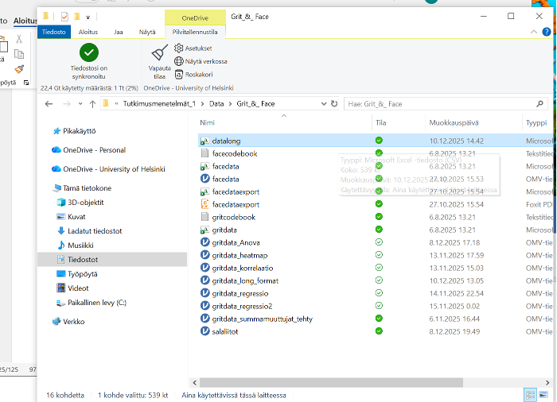
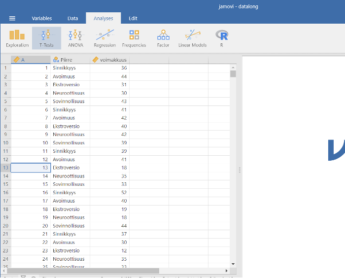
sen myötä kyseiseen valittuun kansioon tallentui tiedosto datalong.csv
jamovissa voi avata tiedoston, joka on nyt long formatissa eli joka koehenkilöllä on 5 eri riviä
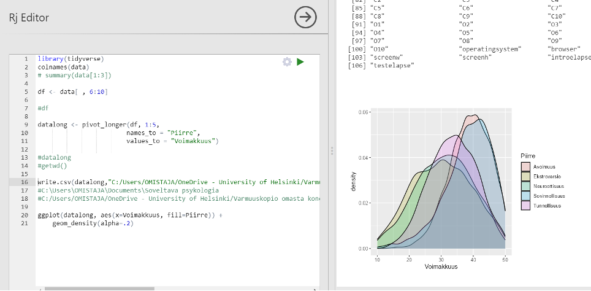
nyt, kun datalong oli muutettu pitkään formaattiin niin siitä pystyttiin piirtämään histogrammit joka piirteestä päällekäin
histogrammi piirrettiin ggplotilla seuraavalla komennolla
ggplot(datalong, aes(x=Voimakkuus, fill=Piirre)) +
geom_density(alpha=.2)
alpha käskyllä saa läpinäkyvyyttä säädettyä
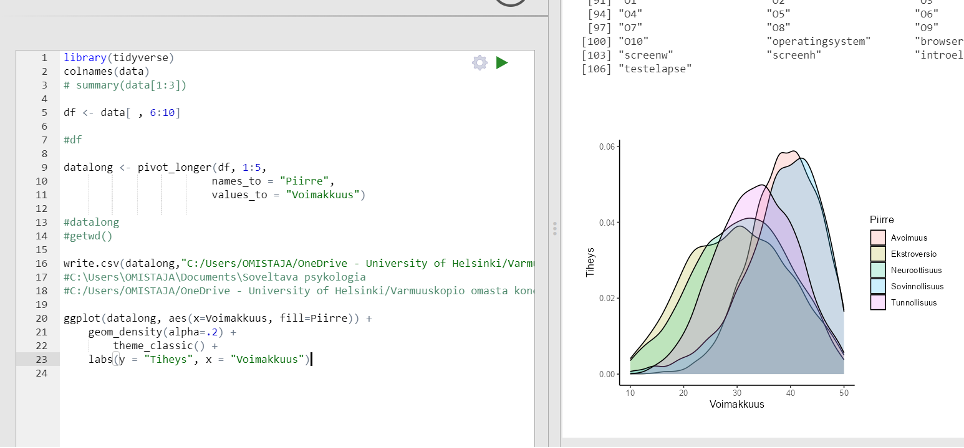
theme_classic()
- muuttaa teeman yksinkertaisemmaksi ja taustalta poistuu ylimääräinen sälä
labs()
- muokkaa otsikoita eli labeleitä
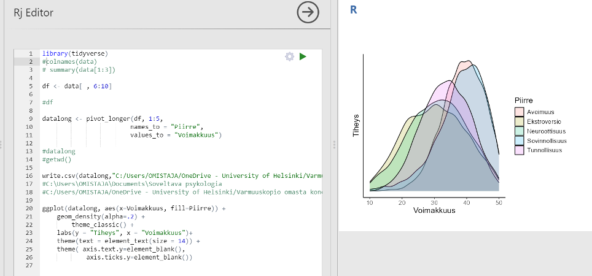
theme(text = element_text(size = 14))
- muokkaa tekstin fonttikokoa
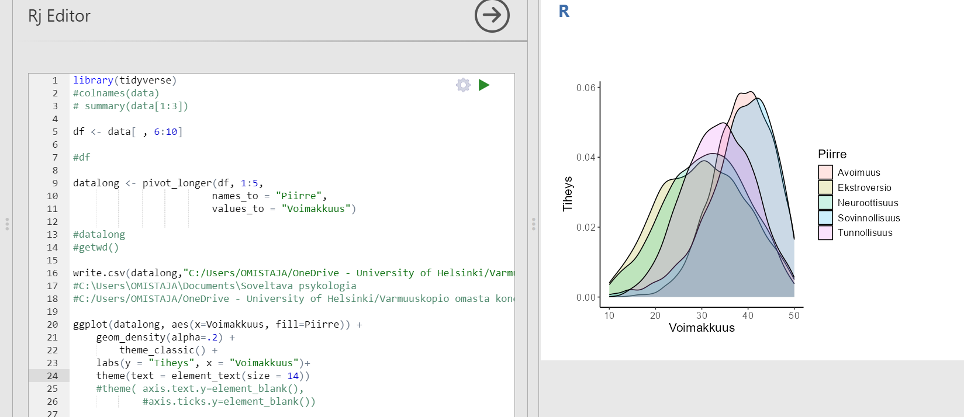
theme( axis.text.y=element_blank(), axis.ticks.y=element.blank()) poistaa y-akselin arvot kuvaajasta
alemmassa kuvassa y-akselin arvot näkyvät, koska komento on otettu pois käytöstä eron havainnollistamiseksi. Ylemmässä kuvassa arvot ovat poistettuna
koodi, jolla saa muunnettua datan pitkään muotoon (long form) ja piirrettyä päällekkäiset histogrammit
library(tidyverse)
#colnames(data)
# summary(data[1:3])
df <- data[ , 6:10]
#df
datalong <- pivot_longer(df, 1:5,
names_to = "Piirre",
values_to = "Voimakkuus")
#datalong
#getwd()
write.csv(datalong,"C:/Users/OMISTAJA/OneDrive - University of Helsinki/Varmuuskopio omasta koneesta/Tiedostot/Soveltava Psykologia/Tutkimusmenetelmät_1/Data/Grit_&_ Face/datalong.csv")
#C:/Users/OMISTAJA/OneDrive - University of Helsinki/Varmuuskopio omasta koneesta/Tiedostot/Soveltava Psykologia/Tutkimusmenetelmät_1/Data/Grit_&_ Face
ggplot(datalong, aes(x=Voimakkuus, fill=Piirre)) +
geom_density(alpha=.2) +
theme_classic() +
labs(y = "Tiheys", x = "Voimakkuus")+
theme(text = element_text(size = 14))+
theme( axis.text.y=element_blank(),
axis.ticks.y=element_blank())vastaavalla idealla, kun data on pitkässä muodossa, voidaan piirtää boxplotteja ja muita kuvioita
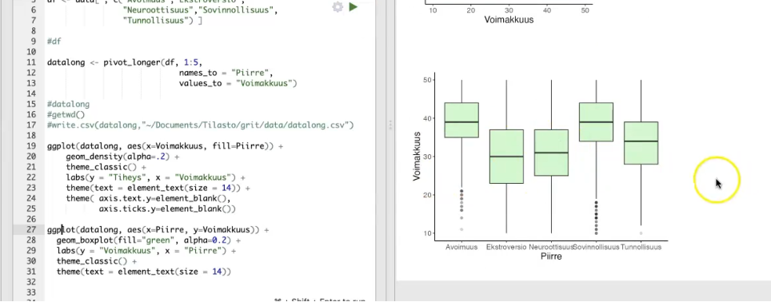
boxplotin koodi
ggplot(datalong, aes(x=SetSize, y=Score)) +
geom_boxplot(fill="green", alpha=0.2) +
labs(y = "D'", x = "SetSize") +
theme_classic() +
theme(text = element_text(size=14))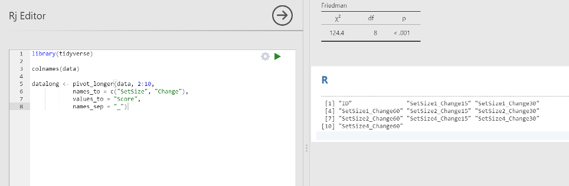
muokataan toistomittaus-Anova viedon 42 aineistosta changewithinsubjects pitkämuotoinen (long format)
talletetaan datalong muuttujaan
<- pivot_longer(data, 2:10,
- muuttaa long formiin
names_to = c()
- muuttaa kolumnien eli sarakkeiden nimet
values_to = ()
- muuttaa arvojen nimen
names_sep = ()
selkeyttää millä nimet on datassa eroteltuna
esimerkiksi kyseisessä aineistossa ne on eroteltuna alaviivalla _
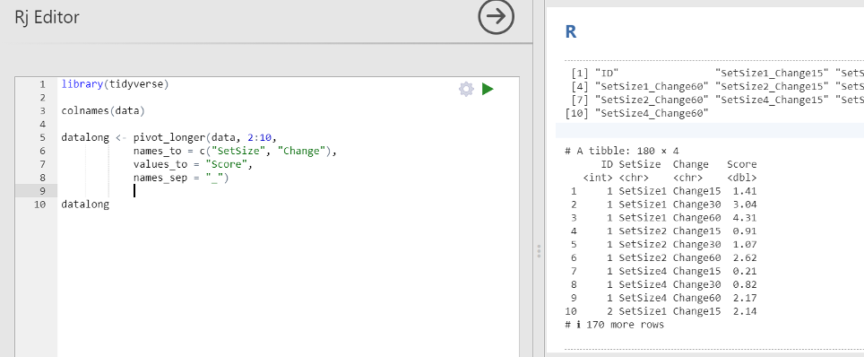
kun ajetaan datalong komento, nähdään, että se on jakautunut kolmeen sarakkeeseen SetSize, Change ja Score
Alaviiva nimien erottamiseksi on hyvin näppärä, koska tämäntyylisellä funktiolla saa nimet suoraan eroteltua
jos muuttujat on nimetty systemaattisesti voidaan käyttää automaattikoodeja, joilla ne saadaan eroteltua
- esim. names_sep = ”jotain”
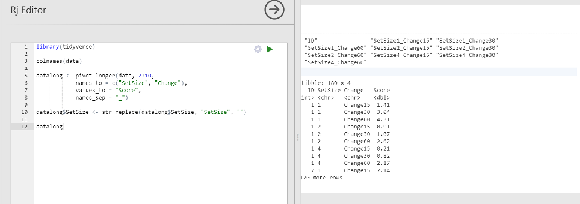
datalong$SetSize <- str_replace(datalong$SetSize, “SetSize”, ““)
komennolla saadaan SetSizen nimestä poistettua SetSize ja se on vain 1, 2 tai 4
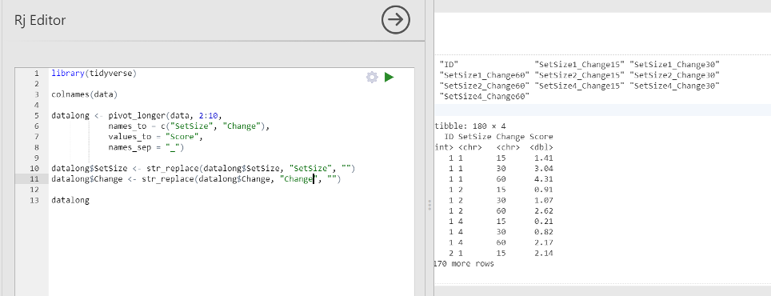
tehtiin sama muutokselle eli changelle
datalong$Change <- str_replace(datalong$Change, “Change”, ““)
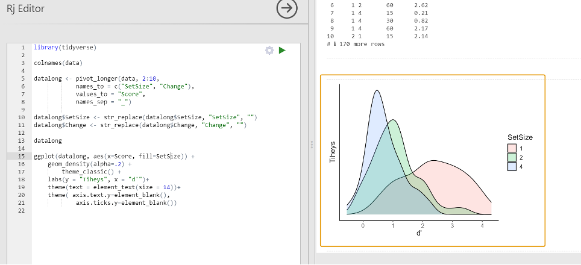
samalla koodilla kuin aiemmin saadaan long format muodossa olevasta datasta piirrettyä päällekäiset histogrammit
ggplot(datalong, aes(x=Voimakkuus, fill=Piirre)) +
geom_density(alpha=.2) +
theme_classic() +
labs(y = "Tiheys", x = "Voimakkuus")+
theme(text = element_text(size = 14))+
theme( axis.text.y=element_blank(),
axis.ticks.y=element_blank())täytyi vain muuttaa oikeat muuttujien nimet ja homma pelittää
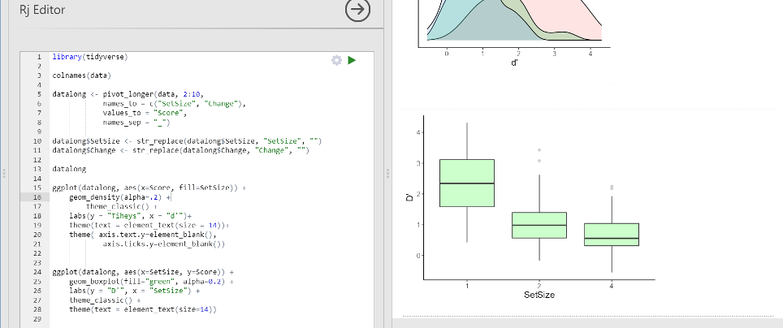
boxplot
näkee keskimäärisen muistisuorituksen (musta poikkiviiva)
- ja kvartaalivälit
mediaani, 25-75 persentiiliväli (IQR, Inter quartal range), 25 – 1,5* IQR, 75 + 25 * IQR
ggplot(datalong, aes(x=SetSize, y=Score)) +
geom_boxplot(fill="green", alpha=0.2) +
labs(y = "D'", x = "SetSize") +
theme_classic() +
theme(text = element_text(size=14))Eli, jos jamovin kuvaajan piirto-ominaisuudet ei tyydytä, niin r-editorilla saa monipuolisemmin piirrettyä
8.4 R-studio, aineiston avaaminen ja kuvailu
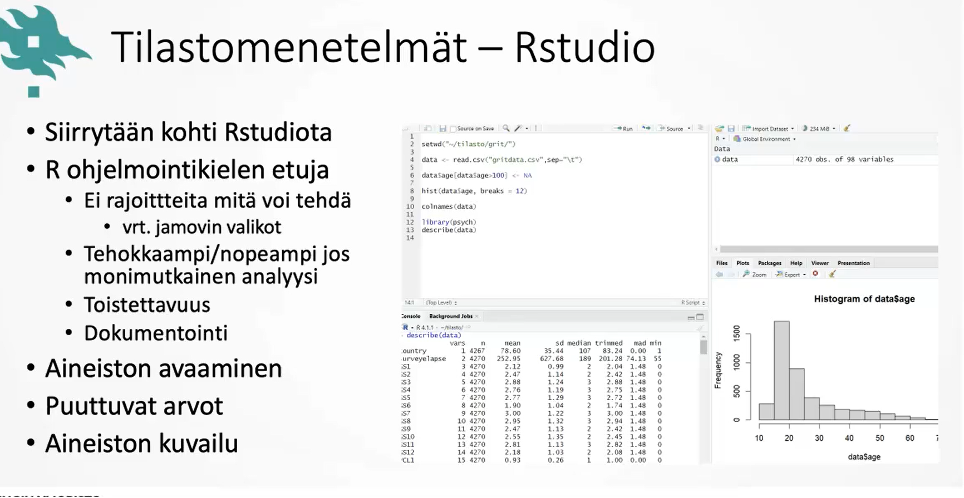
jamovilla enemmän rajoitteita, r-kielelle valtava määrä paketteja ja voi itse määritellä mitä tekee
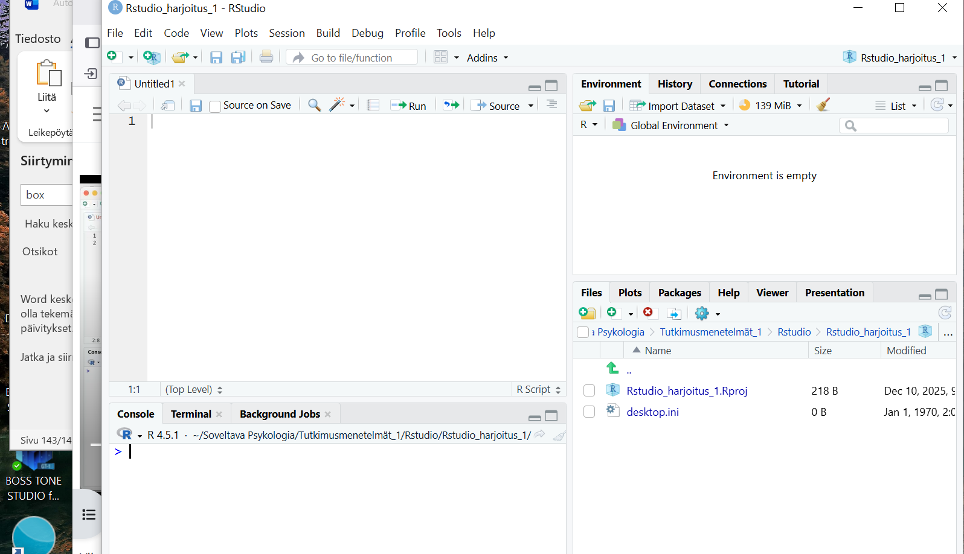
Näppäinyhdistelmällä ctrl + L saa konsolin tyhjennettyä
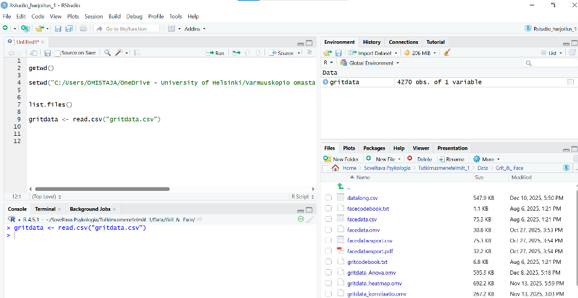
getwd()
- näyttää nykyisen working directoryn
setwd()
- asettaa working directoryn
list.files()
- listaa kyseisen working directoryn eli työskentely kansion tiedostot
gritdata <- read.csv(”gridata.csv”)
tallettaa gritdata.csv sisällön gritdata muuttujaan, joka näkyy oikeassa yläreunassa environment kohdassa
näyttää, että datassa olisi vain yksi muuttuja eli jokin on pielessä
kyse siitä ettei ohjelma osaa erotella tabilla eroteltuja
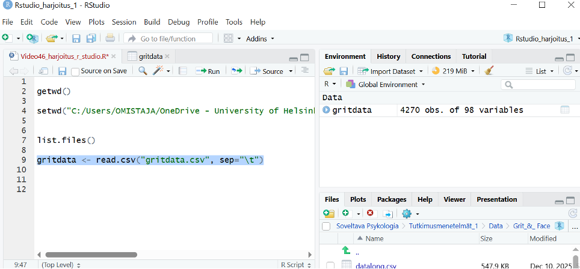
lisäämällä sep=”\t”
gritdata <- read.csv(“gritdata.csv”, sep=“\t”)
ohjelma osaa erotella ja näkyy 98 muuttujaa
sep = separate eli erottelufunktio
sep=”\t”
- komennon jälkeen osaa erotella tabilla erotellut muuttujat
separator voi olla myös esim.
pilkku -> sep=”,”
tai puolipiste -> sep=”;”
eri formaatteja löytyy, tyypillisimmin pilkku
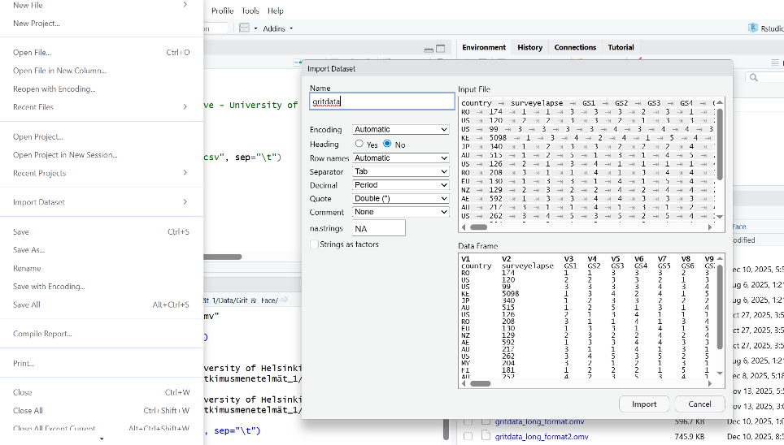
voidaan avata datasetti myös file valikosta kohdasta import dataset
from text
avautuu valikko, josta voi esim valita separaattorin
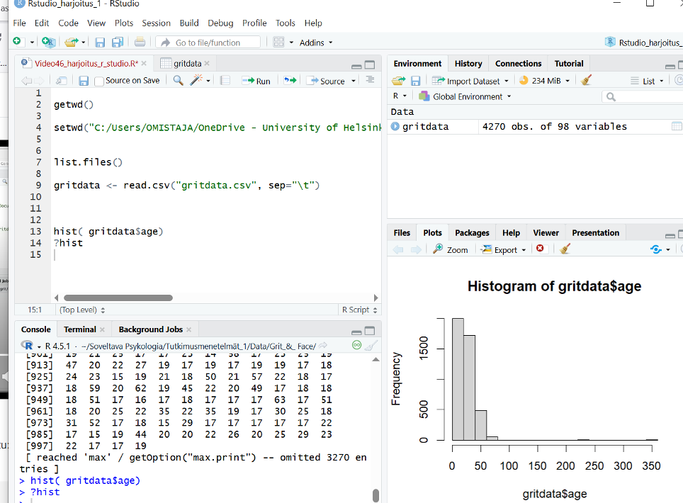
$ merkillä voi viitata tiettyyn osaan/muuttujaan datassa
histogrammin saa piirrettyä hist() funktiolla
hist( gritdata$age)
piirretään histogrammi gritdatan age muuttujasta
nähdään kuvasta, että löytyy outliereita, sillä ikäjakauma jatkuu 350 ikävuoteen asti
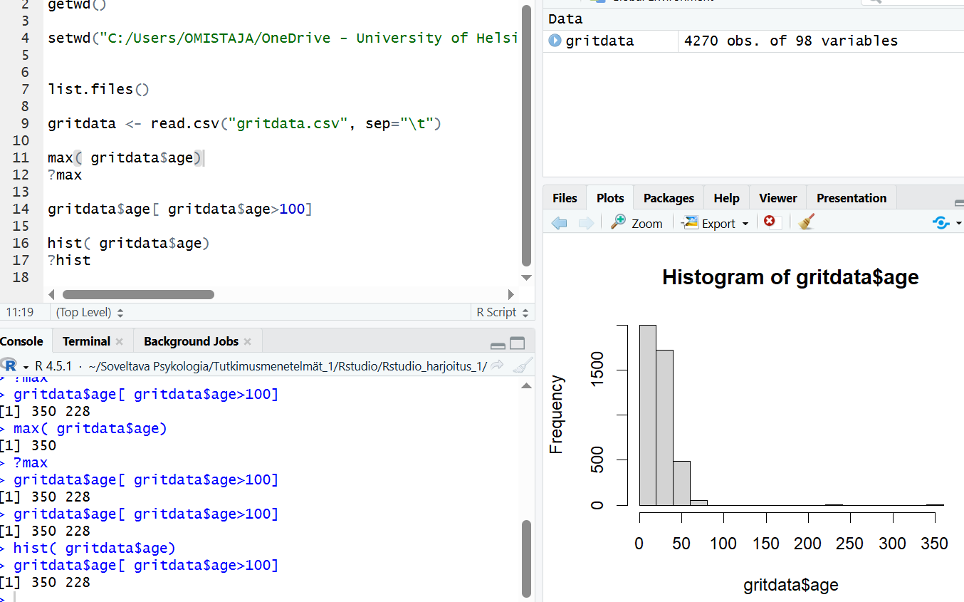
max()
- kertoo maksimiarvon
?max
- antaa ohjeita
gritdata$age[ gritdata$age>100]
näyttää gritdatan age muuttujan yli 100 olevat arvot
tällä voi siis etsiä outliereita
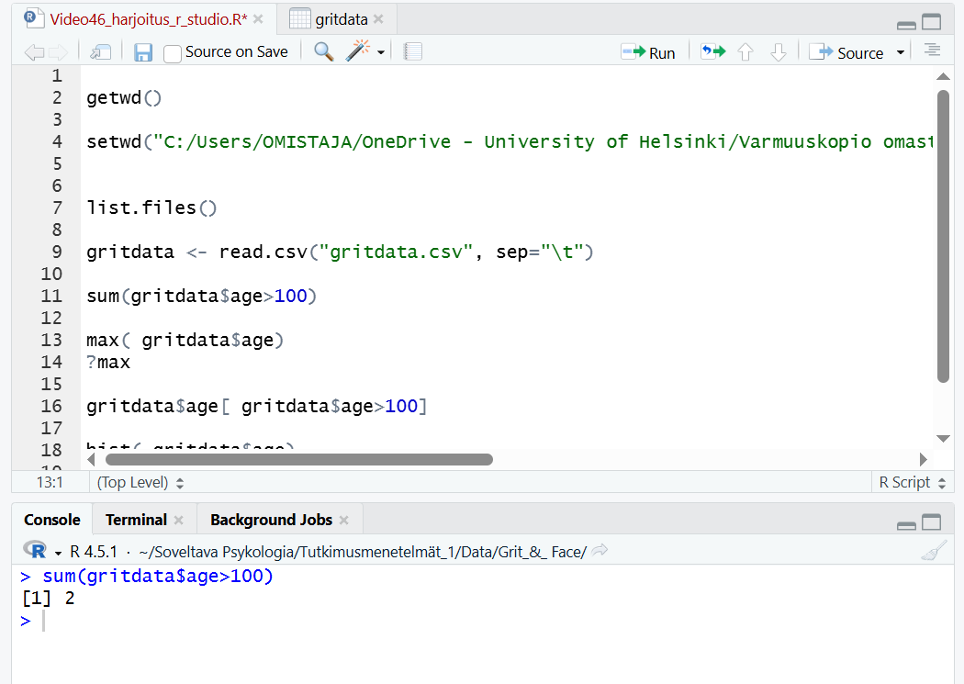
sum(gritdata$age>100)
- näyttää montako ehdon täyttävää arvoa löytyy
gritdata$age[ gritdata$age>100] <- NA
merkattiin yli 100 olevat arvot puuttuviksi
NA tarkoittaa puuttuvaa arvoa
nuolikomennolla merkattiin hakasulkeiden sisältö puuttuvaksi
histogrammissa näin vain järkeviä ikäarvoja
breaksilla voi säätää välejä, joilla histogrammiin piirtyy palkkeja
gritdata$age[ gritdata$age<18] <- NA
- merkattiin alle 18 arvot puuttuviksi
kirjoitattamalla konsoliin datalähteen ja hakasulkeissa sen numeron, niin se näyttää järjestysnumeron mukaisen arvon
esim. gritdata$age[1]
- näyttää gritdata$age ensimmäisen arvon
gritdata$age[5]
- viidennen arvon
gritdata$age[100:120]
- näyttää arvot välillä 100 – 120
poistettiin alle 18 ikäarvojen poisto #
gender muuttujasta merkattiin 0 arvot puuttuviksi
- gritdata$gender[ gritdata$gender==0 ] <- NA
konsolissa tarkastettiin mitä minimi näyttää
- antoi minimiksi ensin NA, joka tarkoitti, ettei minimifunktio osannut automaattisesti tulkita puuttuvia arvoja poistetuiksi
lisättiin minimifunktioon NA arvojen poistaminen
min(gritdata$gender, na.rm = TRUE)
na.rm = puuttuvat arvot poistetaan NA remove
tämän seurauksena antaa tulokseksi minimiarvon 1 eli oikean vastauksen
voidaan poistaa yksi kerrallaan muistakin muuttujista 0 arvot
- kuten kuvassa urbanista ja educationista
kuitenkin hiukan hidasta
jos tiedetään, että kaikki 0 arvot datassa ovat vääriä / puuttuvia arvoja voidaan käyttää
gritdata[ gritdata ==0] <- NA
merkitsee kaikki gritdatan 0 arvot puuttuviksi
colnames(gritdata)
- näytää sarakkeiden nimet
kun na.rm ei käytössä, niin keskiarvofunktio ei tunnista puuttuvia arvoja ja osaa laskea sitä
kun na.rm on käytössä, niin osaa laskea keskiarvon
na.rm on siis tärkeä käyttää monissa funktioissa, jotka eivät suoraan osaa tunnistaa puuttuvia NA arvoja
Keskiarvo: mean(gritdata$age, na.rm = TRUE)
Keskihajonta: sd(gritdata$age, na.rm = TRUE)
describe()
- funktiolla saa kaikkien muuttujien keskeisiä kuvailevia statistiikkoja esille
täytyy muistaa käyttää library(psych) kirjastoa
eli koodin alkuun lisätään library(psych)
?describe
- näkee ohjeet, miten voi hiukan tarkemmin määritellä sen mitä haluaa funktiolla tulostaa
jos halutaan rajata vaikkapa gritdasta vain rivit 29-41 niin se voidaan lisätä hakasulkeisiin ja näin rajoittaa.
- describe(gritdata[,29:41]
myös kolumnien nimet kirjoittamalla voi määritellä valitut muuttujat
describe(gritdata[c(“education”,“age”)])
describeBy(gritdata[,31:42], group=“gender”)
jaotellaan kuvailevat tiedot faktorin eli ryhmittelevän muuttujan mukaan
tässä tapauksessa gender ja näyttää siis tunnusluvut gender 1, gendar 2, ja gender 3 erikseen
8.5 Rstudio summamuuttujat
gritdata$ageGroup <- cut(gritdata$age,
breaks = c(0,30,60,100),
labels = c(“nuori”, “keski”, “vanha”))
muuttujan uudelleenkoodaus
yllä koodattiin ikä uuteen muuttujaan kolmeksi ikäryhmäksi
breaksillä määritellään, missä kohtaa on ryhmien rajat
labelsilla ryhmien nimet
muuttujien kuvailevat tunnusluvut ryhmitellen
- describeBy(gritdata[,90:99], group = “ageGroup”)
summafunktiolla näkee montako arvoa kyseisessä luokassa on
- sum( gritdata$ageGroup== “nuori”, na.rm = TRUE)
indeksien avulla voi määritellä rivien ja sarakkeiden määrän/välin. Enskiksi on rivien määrittely ja pilkun jälkeen sarakkeiden valinta
- gritdata[1:10, 1:6]
voidaan myös määritellä sarakkeiden nimien mukaan, mitkä otetaan mukaan
- gritdata[1:30,c(“gender”,“age”)]
merkataan gritdatan sarakkeiden 3-14 nolla-arvot puuttuviksi
- gritdata[ , 3:14] [ gritdata[, 3:14] == 0] <- NA
katso colnamesista mistä muuttujista täytyy poistaa 0 arvot
–> käytä seuraavaa komentoa
gritdata[ , 3:14] [ gritdata[, 3:14] == 0] <- NA
gritdata[ , 43:92] [ gritdata[, 43:92] == 0] <- NA
voi myös tehdä kerrallaan, jos ok poistaa nollat koko aineistosta
- gritdata[gritdata == 0] <- NA
käänteisesti koodattujen kysymysten kääntäminen samalle asteikolle
- eli käännetään samoin päin kuin muut kysymykset, kun tehdään summamuuttujaa
gritdata$GS1 <- 6-gritdata$GS1
gritdata$G4 <- 6-gritdata$GS4
gritdata$GS6 <- 6-gritdata$GS6
gritdata$GS9 <- 6-gritdata$GS9
gritdata$GS10 <- 6-gritdata$GS10tehdään summamuuttuja
- gdata$Sinnikkyys <- rowMeans(gdata[, c(“GS1”,“GS2”,“GS3”,“GS4”, “GS5”,“GS6”,“GS7”,“GS8”, “GS9”,“GS10”,“GS11”,“GS12”) ], na.rm=TRUE)
eli otetaan kaikki rivit ja vain tietyt sarakkeet (GS sarakkeet). Lasketaan GS sarakkeiden kaikkien rivien keskiarvot. Rivikeskiarvot tallentuvat Sinnikkyys summamuuttujaan
eli saadaan jokaiselta koehenkilöltä keskiarvo jokaisesta 12 grit kysymyksestä
gritdata$Avoimuus <- ( gritdata$O1 + (6-gritdata$O2) + gritdata$O3 +
(6-gritdata$O4) + gritdata$O5 + (6-gritdata$O6) +
gritdata$O7 + gritdata$O8 + gritdata$O9 +
gritdata$O10) / 10lasketaan siis muuttujat suoraan yhteen ja otetaan niiden keskiarvo.
täytyy muistaa kääntää käänteisesti koodatut kysymykset
asteikon 1-5:lle saa käännettyä erottamalla 6:sta
eli, jos 1 pitäisikin olla 5 niin 6 – 1 = 5
tässä tavassa se hyvä puoli ettei kosketa ollenkaan alkuperäisiin muuttujiin, vaan koodauksen kääntö samoin päin tehdään vain suoraan summamuuttujaan
Boxcox muuttujanmuunnos
- lambda kertoimella voidaan transformoida muotoa -2 - +2 välillä
install.packages("EnvStats")
library(EnvStats)
gritdata$age_transform <- boxcoxTransform(gritdata$age, -1)
hist(gritdata$age_transform)boxcox muuttaa arvot random asteikolle niin kannattaa normalisoida!
onnistuu scale funktiolla
- gritdata$age_transform <- scale(boxcoxTransform(gritdata$age, -1))
normalisoitu boxcox muunnoksen läpikäynyt muuttuja
8.6 Kuvat R-kielellä r-studiossa
Base r ja paketit
kaava/formula muoto suht yleinen r-kielellä
- boxplot( y~x, data=mydata)
ggplotissa
- ensiksi kerrotaan mistä datasta, sitten esteettiset ominaisuudet (aes), x ja y muuttujat ja sitten lisätään erilaisia elementtejä
ggpubr
tehty ggplotin päälle
julkaisuja varten
- kuvat samannäköisiä teki kummalla tahansa
- kannattaa ymmärtää, jonkin verran kumpaakin
- julkaisuja varten tarvitsee todnäk hienostuneempia työkaluja, kuten ggpubr
boxplot r:n kaavamuodolla
boxplotissa 1. muuttuja tulee y-akselilla ja ~ merkin jälkeinen
x-akselille. 2. muuttujalla ennustetaan ensimmäistä
data =, kohdassa kerrotaan, mistä datasta muuttujat otetaan
boxplot( Sinnikkyys ~ ageGroup, data = gritdata)
qqplot
qqnorm() lisää qqplotin ja qqline diagonaaliviivan siihen
qqnorm(gritdata$Sinnikkyys)
qqline(gritdata$Sinnikkyys)
frame=FALSE, poistaa laatikon reunoilta
col = ““, muuttaa väriä
qqnorm(gritdata$Sinnikkyys, frame=FALSE, col = “blue”)
qqline(gritdata$Sinnikkyys, col = “orange”)
?qqnorm
- saa lisätietoja ja vinkkejä
plotit
eka muuttuja x akselille, toka y-akselille
xlab=“” ja ylab=““, nimeävät otsikot
abline() piirtää regressiosuoran
model1 <- lm( Sinnikkyys ~ age, data = gritdata)
plot(gritdata$age, gritdata$Sinnikkyys,
xlab=“ikä”, ylab=“Sinnikkyys”, frame=FALSE, col=“red”)
abline(model1, col = “blue”)
lineaarinen malli ja regressiosuora
tämä kaavamuoto hyvin tärkeä opetella
esim model2, 1. muuttuja y-akselilla, toiset x-akselilla.
~ jälkeiset muuttujat ennustavat ~ merkkiä edeltävää
model2 <- lm( Ekstroversio ~ age, data = gritdata)
plot(gritdata$age, gritdata$Ekstroversio,
xlab=“Ikä”, ylab=“Ekstroversio”, frame=FALSE, col=“red”)
abline(model2, col = “blue”)
yllä model2 muuttujaan talletetaan lineaarinen malli
kertauksena
lm(ennustettava muuttuja ~ ennustavat muuttujat, data = datanlähde)
labsit nimeävät kuvaajan akselit
plot(model1)
plottaa suoraan regressiomallista asioita
esim. qqplotin ja residuaalit
ggplot
ekaks data, sitten aes kohtaan x ja y akselin muuttujat
sitten lisäillään asioita
qeom_point lisää pisteet
geom_smooth(method=lm, se =TRUE) piirtää regressiosuoran ja keskivirheen
ggtitle(“a”), voi lisätä otsikon
ggplot(gritdata, aes(x=age, y=Sinnikkyys) ) +
geom_point(alpha=.5, colour="red") +
geom_smooth(method=lm, se =TRUE, colour = "blue") +
labs( y="Sinnikkyys", x="Ikä") +
theme_classic() +
theme(text = element_text(size = 18))asennettiin ggpubr
- install.packages(”ggpubr”)
lisää kirjasto ylös
- library(ggpubr)
ggboxplot(gritdata, x=“education”, y=“Sinnikkyys”)
luokittelee puuttuvat arvot yhdeksi luokaksi
- tätä ei haluta niin lisätään seuraava juttu
gritdata <- subset(gritdata, complete.cases(education))
- saatiin puuttuvien arvojen luokka pois boxplotista
kuvat voi tallettaa muuttujiksi <- komennolla
- ggarrange komennolla voi plotata kuvat vierekkäin
ggarrange(figA, figB, ncol=2, nrow=1)
ncol=2, määrittää sarakkaiden määrän kahdeksi
nrow=1, määrittää rivien määrän yhdeksi
lisättiin kuviin otsikot
ggtitle(“a”), ggplotissa otsikko
title= “b”, ggpubr:ssä otsikko
figA <- ggplot(gritdata, aes(x=age, y=Sinnikkyys) ) +
geom_point(alpha=.5, colour="red") +
geom_smooth(method=lm, se =TRUE, colour = "blue") +
labs( y="Sinnikkyys", x="Ikä") +
theme_classic() +
ggtitle("a") +
theme(text = element_text(size = 16))
gritdata <- subset(gritdata, complete.cases(education))
figB <- ggboxplot(gritdata, x="education", y="Sinnikkyys", title= "b")ggarrangella pystyy rivien ja sarakkeiden määrää asettelemaan kuvia vierekkäin ja päällekkäin enemmänkin
ggarrange(figA, figB, figA, figB, ncol=2, nrow=2)
löytyy myös ggsave funktio, jota en kuitenkaan saanut toimimaan
kuvat pystyy exporttaamaan oikeassa reunassa plot kohdan export valikosta
8.7 Korrelaatio ja muuttujien tyypin vaihtaminen rstudiolla
muuttujan tyypin vaihtaminen
as.factor muuntaa jatkuvan kategoriseksi/faktoriksi
as.numeric muuntaa muuttujan jatkuvaksi
gritdata$education <- as.factor(gritdata$education)
poista puuttuvat arvot
- subset poistaa rivin/koehenkilön koko datasta, jos tässä tapauksessa educationista puuttuu arvoja.Eli vain complete cases säilyvät
gritdata <- subset( gritdata, complete.cases(education))
histogrammin koodi ggplotilla
ggplot(gritdata, aes(x=Sinnikkyys) ) +
geom_histogram(alpha=.5,fill="blue", colour="black", binwidth=.25) +
labs( y="Lukumäärä", x="Sinnikkyys") +
theme_classic() +
ggtitle("a") +
theme(text = element_text(size = 14))tehtiin jokaisesta persoonallisuuspiirteestä histogrammi, joka talletettiin fig komentoon ja ggarrange() funktiolla piirrettiin ne kahteen riviin ja kolmeen sarakkeeseen
- ggarrange(figC, figD, figE, figF, figG, figH, ncol=3, nrow=2)
ggsave(“../../figs/piirrejakaumat.png”)
nyt onnistuin tallentamaan ggsave funktiolla kuvan
oletan, että ../ siirtää yhden kansiotason taaksepäin
eli nyt kun käytin kaksi kertaa ../../ niin tallennus onnistui
ggsave(“../../figs/piirrejakaumat.png”, width = 30, height= 20, units = “cm”, dpi = 300)
- tässä vielä määritettynä kuvan koko ja resoluutio (dpi)
muuttujan uudelleennimeäminen
rename(data, “uusi nimi” = “vanha nimi”)
saa nimettyä muuttujan uudelleen
gritdata <- rename(gritdata, “Ikä” = “age”)
voidaan valita tietyt muuttujat ja luoda uusi datasetti, jossa vain ne muuttujat mukana
- selectVariables <- c(“Sinnikkyys”, “Tunnollisuus”, “Neuroottisuus”, “Sovinnollisuus”, “Avoimuus”, “Ekstroversio”, “Ikä”)
selecetedData <- gritdata[, selectVariables]
- nuolifunktiolla talletetaan ensin tietyt sarakkeet selectVariables muuttujaan ja sen jälkeen nuolifunktiolla talletetaan gritdatasta seletVariables muuttuja SelectedDataan uuteen dataframeen
korrelaatioiden laskeminen rstudiossa
funktiolla cor() korrelaatio
method valitsee mitä kerrointa käytetään
use = “complete.obs” , otetaan huomioon vain täydelliset havainnot eli puuttuvat arvot jätetään huomiotta
funktio round() pyöristää tulokset
round(cor(selectedData, method = "pearson", use ="complete.obs"),2)
Korrelaatioheatmapin tekeminen
cormat <- round(cor(selectedData, method = "pearson", use ="complete.obs"),2)
longcormat <- melt(cormat)
ggplot(data=longcormat, aes(x=Var1, y=Var2, fill=value))+
geom_tile() +
geom_text( aes(Var2, Var1, label=value), colour="black" )+
theme_minimal() +
theme( axis.text.x = element_text(angle=45, hjust =1),
axis.title = element_blank() ) +
scale_fill_gradient2( low="blue", high="red", mid="white",
midpoint= 0, limit = c(-1,1), space="Lab",
name = "Pearsonin\nkorrelaatio")+
theme(text = element_text(size=16))melt() funktio muuttaa datan pitkään matriisimuotoon, josta pystyy tekemään heatmapin
- muuttaa datan kahteen kolumniin
talletetaan ggsavella
ggsave(“../../figs/piirreHeatmap.png”, width = 30, height= 20, units = “cm”, dpi = 300, bg=“white”)
bg=”white” muuttaa taustan valkoiseksi
8.8 T-testit Rstudio
rm(list = ls())
tyhjentää enviroment ikkunan kokonaan
rm() funktiolla voi poistaa myös yksittäisiä objekteja
työskentelykansion määritys, datan avaaminen, nolla-arvojen merkintä puuttuviksi
library(psych)
library(tidyverse)
library(ggpubr)
#määritellään työskentelykansio
setwd("C:/Users/OMISTAJA/OneDrive - University of Helsinki/Varmuuskopio omasta koneesta/Tiedostot/Soveltava Psykologia/Tutkimusmenetelmät_1/Data/Grit_&_ Face")
#avataan data
facedata <- read.csv("facedata.csv", sep=",")
#rm(list = ls())
#tyhjentää enviroment ikkunan kokonaan
#nolla-arvojen merkitseminen puuttuviksi
facedata[facedata == 0] <- NA
hist(facedata$age)
#yli 100 ikäarvojen merkitseminen puuttuviksi
facedata$age[ facedata$age>100] <- NA
facedata$age[ facedata$age<10] <- NA
muuttujan tyypin tarkastaminen
str(facedata)
funktiolla str() voi tarkastaa ovatko muuttujat kategorisia vai jatkuvia
Muuttujan tyypin vaihtaminen
facedata$NewRT <- as.numeric(facedata$NewRT)
facedata$SeenRT <- as.numeric(facedata$SeenRT)
#talletetaan mediaani medVal muuttujaan
# ja mad arvo madVal muuttujaan
medVal <- median(facedata$MeanRT, na.rm = TRUE)
madVal <- mad(facedata$MeanRT, na.rm = TRUE)
#lasketaan outliereiden kriteerit MAD arvoilla
lowlimit <- medVal - 3*madVal
highlimit <- medVal + 3*madVal
#poistetaan lowlimitin alittavat arvot ja highlimitin ylittävät
facedata$SeenRT[ facedata$SeenRT<lowlimit ] <- NA
facedata$SeenRT[ facedata$SeenRT>highlimit ] <- NA
facedata$NewRT[ facedata$NewRT<lowlimit ] <- NA
facedata$NewRT[ facedata$NewRT>highlimit ] <- NA
hist(facedata$SeenRT)
#Piirretään jakaumat
figA <- ggplot(facedata, aes(x=SeenRT) ) +
geom_histogram(alpha=.25,fill="blue", colour="black", binwidth=100) +
labs( y="Lukumäärä", x="Tuttu kasvo, RT") +
theme_classic() +
ggtitle("A") +
theme(text = element_text(size = 14))
figB <- ggplot(facedata, aes(x=NewRT) ) +
geom_histogram(alpha=.25,fill="blue", colour="black", binwidth=100) +
labs( y="Lukumäärä", x="Uusi kasvo, RT") +
theme_classic() +
ggtitle("B") +
theme(text = element_text(size = 14))
#järjestetään ggarrangella kahteen sarakkeeseen ja tallennetaan ggsavella
ggarrange(figA, figB, ncol=2, nrow=1)
ggsave("../../figs/RTjakaumat.png", width = 20, height= 10,
units = "cm", dpi = 300)
t-testin tekeminen rstudiolla
t.test(facedata$NewRT, facedata$SeenRT, paired=TRUE)
testistä nähdään, että ryhmien välillä on tilastollisesti merkitsevä ero
p-arvo 2.633e-16
format(2.633e-16, scientific = FALSE)
yllä olevalla komennolla saa näytettyä desimaalimuodossa
- 0.0000000000000002633
keskiarvoero ryhmien välillä ~60 millisekuntia
# koulutuksen vaikutus reaktioaikoihin
facedata$edGroup <- cut(facedata$education, breaks = c(0,2,5), labels = c("low", "high"))
sum(facedata$edGroup=="low", na.rm=TRUE)
sum(facedata$edGroup=="high", na.rm=TRUE)
t.test( NewRT ~ edGroup, facedata)
t-testissä verrataan matalan ja korkean koulutuksen uusien kasvojen tunnistuksen reaktioaikojen ryhmäkeskiarvojen eroja.
ero ei ole tilastollisesti merkitsevä p=0.4248
korkeakoulutus ka: 1332ms, matala koulutus ka: 1345ms
komento on ”lauseke- tai yhtälömuodossa”, käytetään ~ merkkiä
siis edGroup ”ennustaa” tai järjestää tai määrittää NewRt:tä
eli ~ merkkiä edeltävä on ennustettava ja ~ merkin jälkeinen on ennustava
sama testi kuin äsken, mutta nyt tutuilla kasvoilla
tilastollisesti merkitsevä ero, p<.05
korkea koulutus ka: 1315ms, matala koulutus ka: 1265ms
keskiarvon keskivirhe, keskihajonta jaettuna neliöjuuri n:llä
piirretään t-testin kuvaaja
- eli ryhmien keskiarvot ja niiden luottamusvälit
Conditions1 <- as.factor(c("Uusi", "Tuttu"))
mean1 <- mean(facedata$NewRT, na.rm=TRUE)
mean2 <- mean(facedata$SeenRT, na.rm=TRUE)
#lasketaan keskiarvon keskivirhe (standard error of mean)
#keskihajonta / neliöjuuri N:llä
#ekaks lasketaan N -> n1 muuttujaan
#sitten jaetaan keskihajonta N:n neliöjuurella
#kun kerrotaan keskiarvon keskivirhe 1,96 saadaan luottamusväli
n1 <- sum(facedata$NewRT>0, na.rm=TRUE)
sem1 <- 1.96*sd(facedata$NewRT, na.rm=TRUE)/sqrt(n1)
n2 <- sum(facedata$SeenRT>0, na.rm=TRUE)
sem2 <- 1.96*sd(facedata$SeenRT, na.rm=TRUE)/sqrt(n2)
Means1 <- c(mean1,mean2)
Sems1 <- c(sem1,sem2)
figA <- ggplot() +
geom_point(aes(y=Means1, x=Conditions1),
alpha=.1, colour="skyblue", size=5) +
geom_errorbar( aes(x=Conditions1, ymin=Means1-Sems1, ymax=Means1+Sems1),
width=0.1, size=0.5, colour="orange", alpha=0.7) +
ylim(1250,1380) +
theme_classic(base_size = 20) +
xlab("Kasvot") +
ylab("Reaktioaika, ms") +
ggtitle("A")
figA
Kuvaaja koulutusryhmien keskiarvoeroista
#tehdään kuvaaja myös koulutusryhmien keskiarvoeroista
Conditions2 <- as.factor(c("Matala", "Korkea"))
mean1 <- mean(facedata$NewRT[facedata$edGroup=="low"], na.rm=TRUE)
mean2 <- mean(facedata$NewRT[facedata$edGroup=="high"], na.rm=TRUE)
n1 <- sum(facedata$NewRT[facedata$edGroup=="low"]>0, na.rm=TRUE)
sem1 <- 1.96*sd(facedata$NewRT[facedata$edGroup=="low"], na.rm=TRUE)/sqrt(n1)
n2 <- sum(facedata$NewRT[facedata$edGroup=="high"]>0, na.rm=TRUE)
sem2 <- 1.96*sd(facedata$NewRT[facedata$edGroup=="high"], na.rm=TRUE)/sqrt(n2)
Means2 <- c(mean1,mean2)
Sems2 <- c(sem1,sem2)
figB <- ggplot() +
geom_point(aes(y=Means2, x=Conditions2),
alpha=1, colour="skyblue", size=5) +
geom_errorbar( aes(x=Conditions2, ymin=Means2-Sems2, ymax=Means2+Sems2),
width=0.1, size=0.5, colour="orange", alpha=0.7) +
ylim(1250,1380) +
theme_classic(base_size = 20) +
xlab("Koulutustaso") +
ylab("Reaktioaika, ms") +
ggtitle("B")
figB
tehtiin vielä sama koulutustasojen keskiarvovertailulle tuttujen kasvojen kohdalla
ylim() funktiolla saa määritettyä y akselin ala ja ylärajan
- eka on alaraja ja sitten yläraja